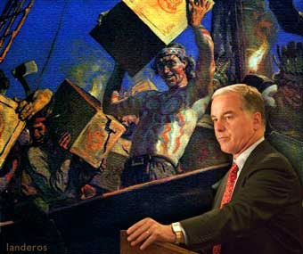

|

Dean's Boston Tea Party
The New England patriot declares war on "King George"
- - - - - - - - - -
by Howard Dean
Editor's note: Following are excerpts from Dean's campaign speech at Copley Square in Boston on Tuesday, September 23, 2003.
 E'RE HERE TODAY to talk about what's at stake in this election. Ten months from today, we'll be coming back to Boston, not just to decide who will be the Democratic nominee, but to determine the future of our democracy. E'RE HERE TODAY to talk about what's at stake in this election. Ten months from today, we'll be coming back to Boston, not just to decide who will be the Democratic nominee, but to determine the future of our democracy.
Two hundred and thirty years ago, right here in Boston, 50 dedicated patriots known as the Sons of Liberty boarded three ships in Boston Harbor to protest a government more concerned with moneyed interests than its own people. Those 50 patriots believed that they had the power and the duty to change their government.
What they did that night became known as the Boston Tea Party. It marked the beginning of the first great grassroots campaign in our history. Their action -- which they took together -- set this country on the path to freedom and democracy. And a King named George -- who had forgotten his own people in favor of special interests -- was replaced by a government of, by and for the people.
The people who boarded those ships in Boston Harbor joined together in common action to create a free society based on individual liberties. And through that action, they changed the course of history.
Democracy and freedom, forged through action. That is the story of America.
It is also our hope for the future.
Today, once again, we stand here in Boston as patriots -- and we stand with more than 410,000 other patriots across this nation who have joined our campaign, and countless millions more who share our values.
We stand here as Americans, once again willing to take action to restore a government of the people.
We stand here as Americans who are no longer willing to allow the further depletion of our nation's treasury through tax cuts for this administration's wealthiest contributors.
We stand here as Americans who are no longer willing to accept an administration whose handouts to industry are squandering our most precious natural resources and causing irreparable harm to our environment.
We stand here as Americans who are no longer willing to accept the partisan squabbling in Washington by both political parties, while 41 million Americans live without health insurance.
And we stand here as Americans who are no longer willing to accept an administration lying to the American people about the reasons for sending our sons and daughters and brothers and sisters to die in a foreign land.
We stand at a critical moment in American history. Either we come together and take action now to restore a politics of participation and a politics of the people, or we allow the Washington insiders and the special interests to continue to make the back room deals that are destroying people's faith in our government.
Democracy itself is at stake in this election. The extreme right wing of the Republican Party has shown nothing but contempt for democracy. From the impeachment of a sitting President, to the recount in Florida, to opportunistic redistricting efforts in Colorado and Texas, and now in the recall effort in California, a narrow band of right-wing ideologues have subverted the democratic process whenever they haven't liked the outcome.
And making a joke out of our system of checks and balances, this administration has sought to expand the powers of executive privilege to such an extent that they've created a presidency that believes it answers to nobody.
But we are going to make them answer to us.
Our democracy is our strongest institution. Yet it is also our most fragile.
Two hundred and sixteen years ago this September, our founders laid out their vision and purpose for America in the Preamble to our Constitution. But at every turn, the Bush Administration has turned our Constitution on its head.
The Constitution seeks to form a perfect union -- but this administration has divided us by race, gender, income, religion, and sexual orientation.
The Constitution seeks to establish Justice -- but this administration has appointed radical ideologues to the courts.
The Constitution seeks to insure Domestic tranquility -- but this administration has capitalized on domestic fears of terrorism for political gain.
The Constitution seeks to provide for the Common Defense -- but this administration has underfunded homeland security and done nothing to protect our ports and harbors.
The Constitution seeks to promote the general welfare -- but this administration has cut funding for child care and education.
The Constitution seeks to secure the blessings of liberty for posterity -- but this administration has shackled our children and grand children with the largest deficit in the history of our nation through reckless tax cuts.
Americans who today aren't even old enough to vote will be the ones who will bear the full cost.
The ideal of democracy is more powerful than money; yet today our democracy is threatened by a flood of special interest money pouring into our nation's capital.
Our founders understood that threat. James Madison and Thomas Jefferson spoke of the fear that economic power would one day seize political power.
That fear has been realized with the Bush administration.
Under the Bush Administration, the largest corporations and the wealthiest individuals benefit from tax-cuts that are bankrupting the states and starving Social Security, Medicare, and our public schools.
These tax cuts reward the largest political contributors at the expense of today's middle class, whose property taxes are skyrocketing.
The flood of special interest money into Washington has transformed the system of American government from a government participated in by all to a government accessible to only a few.
The oil companies write our energy policy; big pharmaceutical companies draft Medicare reform without price controls; and in Iraq, Halliburton is awarded a $1.7 billion no-bid contract.
It is a government of, by and for the special interests. The only way the American people are included in the process is that we are left to pay the bills. And the cost is high -- to our economy, our environment, our children's schools, and our health care.
But the problem extends beyond this Administration, as bad as they are. Today, there are 33 lobbyists for every member of Congress.
Only you have the power to right these wrongs. Only you have the power to send those lobbyists home.
The special interests can only win if the American people continue to drop out of political participation.
But we are going to defeat this President by bringing millions of people back into the political process.
And we are going to defeat the special interests through the hard work and individual contributions of millions of Americans...
This administration has forgotten the lessons of history. The Berlin Wall fell not only because we were strong militarily, but also because we showed those living on the other side that America was a place of hope. Through their admiration for our government, they demanded change within their own country...
Two hundred and two Septembers after the creation of our Bill of Rights, Attorney General John Ashcroft drafted a document that has eroded our Constitutional rights and broken down the mutual trust between the American people and their government -- and between Americans and each other -- by making suspects out of all of us.
That is not the act of a patriot.
A true Patriot Act is not born out of fear, but out of trust; it is not born out of division, but out of community; it is not born out of suspicion, but out of faith in each of us.
We need to remind this administration what a Patriot Act is.
A neighbor lends a hand to a friend in need -- that is a Patriot Act.
A mother struggles for her children's future -- that is a Patriot Act.
An immigrant becomes a member of our American family -- that is a Patriot Act.
Men and women risk life and limb on behalf of our country through our armed services -- that is a Patriot Act.
Americans come together as a community and as a country to declare their values, their rights, and their very independence. That is a Patriot Act, as it was in 1776 and as it is over two hundred years later, and as it will be, through our actions, over two hundred years from now...
We believe that together we can create a force strong enough to change history and take back our country.
We're meeting up. We're organizing. We're putting out flyers and knocking on doors. We're writing letters to one another, and talking about how we can shape the future of our country. Some come together through Meetup.com and deanforamerica.com, and others find each other through word-of-mouth and involvement with their community.
And while the President is amassing a war chest bundled in $100,000 and $200,000 increments by those he calls Rangers and Pioneers, Americans from across the country are redefining campaign finance reform through their $50 contributions...
With mouse pads, shoe leather and hope, we are building an American community strong enough to take on the power of money in politics and deliver the White House to its rightful owners -- We the People.
This September will go down in history -- as the month when the people stood up and believed they could take their country back.

|